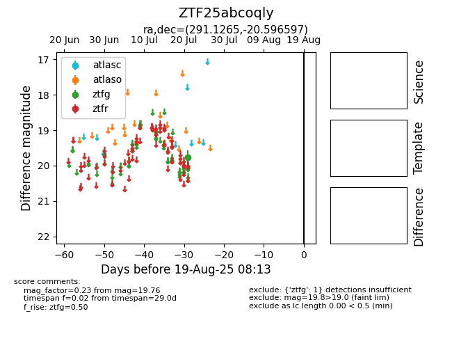

Target ZTF25abcoqly at 2025-08-19 09:59, see:
FINK: fink-portal.org/ZTF25abcoqly
Lasair: lasair-ztf.lsst.ac.uk/objects/ZTF25abcoqly
ALeRCE: alerce.online/object/ZTF25abcoqly
alt names
ZTF25abcoqly (ztf,fink)
coordinates:
equatorial (ra, dec) = (291.1265,-20.59660)
galactic (l, b) = (17.7304,-16.27202)
photometry
last ztfg=19.76
1 ztfg detections
